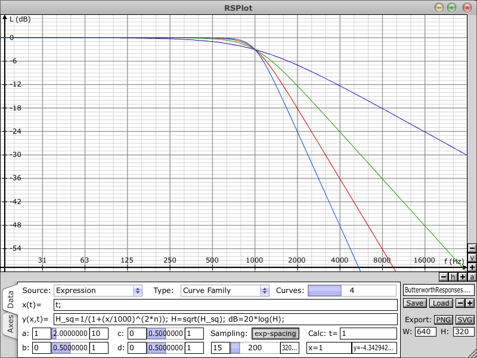

On this page you will find various stuff which is not necessarily related to music production.
XMLBatchProcessor
XMLBatchProcessor is a tool which lets you process a bunch of .xml file at once. The 'process' can be to replace a string with another string or convert values of numeric attributes by applying a conversion formula to them. This tool may come in handy, when for some reason you want to or have to change a bunch of preset files for one of the RS-MET products. An example scenario could be: you have created a bunch of patches for Straightliner using your own .wav files as oscillator waveforms. These patches will have stored the relative paths of these wavefiles. Now you realize that the synth supports .flac and you want to replace those .wav files with their .flac counterparts. So you do. But in order for your patches to still work, you must now change the stored filenames in all those .xml files - no problem: invoke the XMLBatchProcessor, browse to your patch directory, set the program up to replace .wav with .flac and let it do its work. Of course, there might be completely different scenarios which are not necessarily related to patches for RS-MET products at all.
DISCLAIMER: This program will irreversibly change the content of a whole bunch of files - you use it at your own risk. Although there is a mechanism to automatically create a backup of the old files (they will be zipped to an archive before applying the processing), don't rely on this for sensitive data and use this tool with care.
Download XMLBatchProcessor
RSPlot
|  |
{kind=link}
RSPlot is a mathematical curve and function plotting application. It supports plotting of single curves or functions, parametrized curve/function families and plotting of several unrelated curves/functions in one single plot. The result can be exported to an .svg vector graphics file or to a .png bitmap graphics file.
Download RSPlot
DSP Papers and Notes
In this section, I publish some papers and notes on various DSP related topics. In this context, I say "paper" to refer to a somewhat finished document, whereas a "note" may be just a collection of ideas that I quickly wrote down for later reference. These documents arise during development phases in which I familiarize myself with algorithms or derive algorithms myself. For the content of the documents, the same "as-is" and "no-warranties" considerations as for the software apply. If you find errors, I'd be grateful, if you could notify me.
Definite Integration of Polynomials with Polynomials as Limits
I derive an algorithm to calculate coefficients for a polynomial that is given as a definite integral over some other polynomial, where the intergration limits are also given as polynomials.
A Generalization of the Hadamard Transform
I describe a generalization of the Hadamard transform that may be useful as feedback matrix in a feedback delay network (FDN).
Two Interpretations Of Frequency Warped Transfer Functions
Referring to the z-domain frequency transformations proposed by Constantinides, I present two
different ways to view and actually implement them.
Resonance Tuning For The Digital Moog Filter
A paper in which I derive formulas for correct tuning of the resonance frequency and feedback
gain for a digital model of the famous Moog filter.
Attack Decay Envelope
Derives equations for scaling the impulse response of a series connection of two RC-type filters so
as to achieve a peak amplitude of unity. This scaling is useful if one wants to use such a series
connection as envelope generator.
Hermite Interpolation Between 2 Points
Gives formulas for the coefficients of a polynomial that goes through 2 sample points and matches
a number of prescribed derivatives at these points.
Low Shelving Analog Prototype Filters
In this paper, I describe how to transform an arbitrary analog lowpass prototype filter into a
low-shelving prototype.
Bluestein FFT
Here, I present the derivation of the Bluestein FFT algorithm and try to give an intuitive
interpretation of the result. The Bluestein FFT algorithm is an O(N * log(N)) algorithm to compute
the DFT of a sequence of arbitrary length.
Time Domain Biquad Design
I derive formulas for designing biquad filters from time-domain specifications of the desired
impulse response, such as frequency, amplitude, phase and decay of a deacying sinusoid.
Continuous Time Systems
A summary of my current understanding of linear time-invariant systems in continuous time. Explains
the differential equation, transfer function and frequency response (still somewhat incomplete).
Basic Digital Filters
A collection of some formulas for basic digital filters.
Formantanalyse
A document that I wrote as a seminar paper during my studies. It's about linear prediction,
adaptive filters and the Levinson/Durbin algorithm. Written in german language.
Thesis
This is my master thesis. It's about spectral envelopes and modeling of formants. Written in
german language.
Open Source Stuff
BesselFilterDesign.zip
A toolbox for GNU Octave and MatLab to design analog and digital Bessel filters. It also
incorporates Bessel based shelving- and peaking-characteristics, implementing the algorithm
described in the LowShelvingPrototypes.pdf paper above.